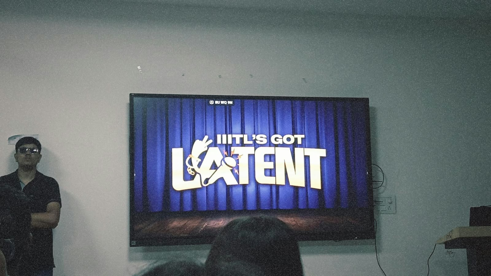
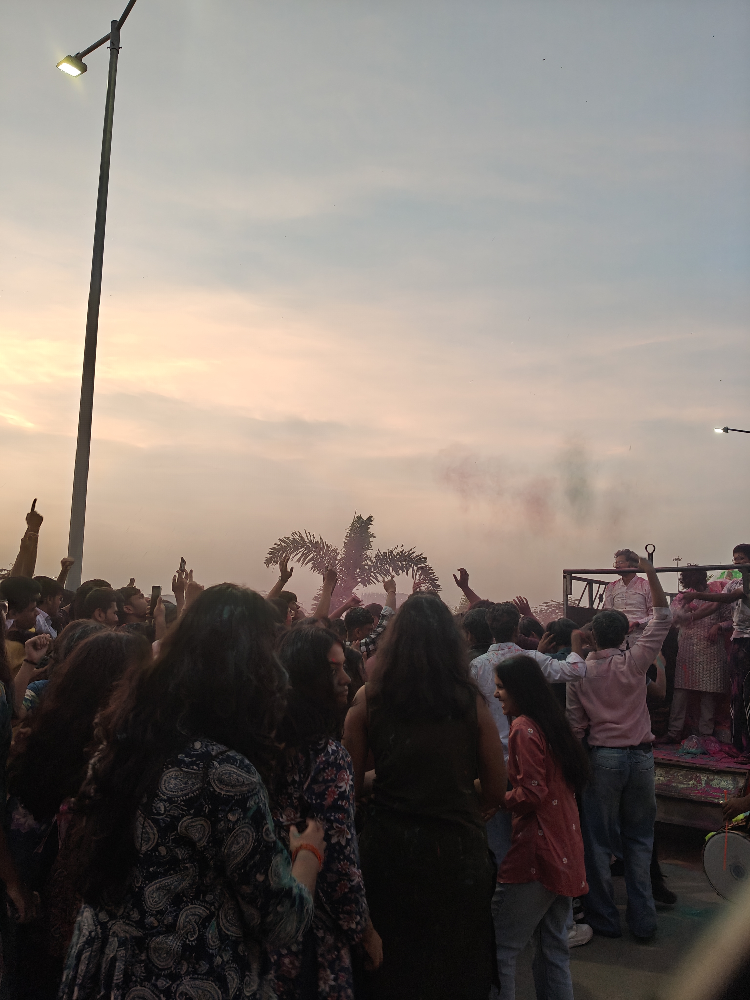

Entering college for the first time!
Starting college feels like opening a new chapter of book whose story I have not read yet. There is excitement about the opportunities ahead, but there is also nervousness about the changes. When I first time entered inside the campus , I was anxious about the admission process and stuff. We were given some forms and all to fill , and as usual i forgot to take a pen with me, also i didn't know that we have to submit fees online , and papa only had cash, the look on the face of my father said it all.Somehow managed this blunder and completed the admission formalities.After that it was time for hostel room allotment.
Getting Used to a New Environment
One of the biggest changes in college is becoming more responsible for my own routine. There are new places to explore, people to meet, classes to attend, and things to learn. Every day brings something unfamiliar. Sometimes everything feels exciting, while at other times it feels like there is too much to manage at once. I am beginning to understand that adjusting to a new environment takes time. I do not have to know everything or feel completely comfortable from the very first day.
The Challenge of Managing Time
One challenge I am still working on is time management. College life can become busy when classes, assignments, personal goals, and free time all need attention. It is easy to make a long to-do list and then feel disappointed when everything does not get completed. I am learning that a routine should help me, not make me feel guilty. Planning a few important tasks, preparing for classes, and leaving some time to rest can make the day easier to manage.
Learning Beyond the Classroom
Our seniors play an important role in our college life. They regularly meet us to discuss academics, college culture, and any problems we face. They also teach juniors without expecting anything in return and help us develop new skills and gain knowledge beyond the classroom.
Seniors manage cultural clubs, activities, and college fests to keep our college culture alive and make things easier for juniors. Although they can sometimes be strict, their guidance is often for our benefit. They make college life more supportive, enjoyable, and full of learning. We are gratefull to have them by our side.
Things I Am Looking Forward To
My College Goals
- Learn programming and improve my coding skills.
- Participate in college clubs and activities.
- Make good friends and create lasting memories.
My Daily Priorities
- Attend classes and understand the topics.
- Practise coding and complete assignments.
- Manage time for rest and personal growth.
School Life and College Life
| Aspect | School Life | College Life |
|---|---|---|
| Routine | Usually more structured | Requires more personal planning |
| Learning | Building academic foundations | Exploring subjects in greater depth |
| Responsibilities | More guidance from teachers and family | More independent decision-making |
Memories from IIIT Lucknow
IIITL Got Latent
IIITL Got Latent was one of the best events I experienced at college. It was full of humour, comedy, and entertaining performances. I laughed so much and genuinely enjoyed every moment. It was a perfect reminder that college life is not just about academics but also about having fun together.

Ganpati Bappa Aagaman
Ganpati Bappa Aagaman was another beautiful memory. We welcomed Bappa with dhol, music, dancing, and colours. Everyone celebrated together with great joy and devotion. For the next ten days, we also participated in aarti. The celebration brought us together and made our college experience even more special.

Useful Resources for Students
Our seniors have created StudentHub, a student-led community and resource platform at IIIT Lucknow that helps students collaborate and support each other.
A New Me, One Step at a Time
My college journey is still unfolding, and I know there is a lot left to learn. I may not have the perfect routine yet, and I may sometimes feel nervous about what lies ahead. However, I am learning to be patient with myself. I do not need to figure out my entire future in one day. I can take small steps, learn from my experiences, and keep improving. For me, college is becoming a journey of discovering new possibilities while slowly becoming more independent and confident. A new campus may mark the beginning of this chapter, but the person I become along the way will make it meaningful.